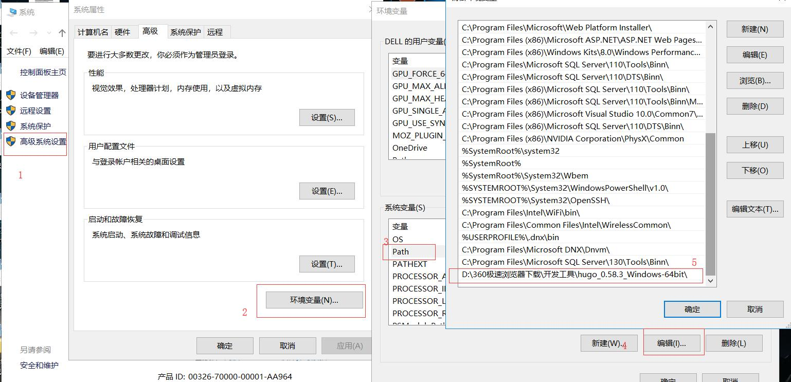

原文出处:本文由博客园博主华丽的码农提供。
原文连接:https://www.cnblogs.com/codernice/p/11605877.html
原文连接:https://www.cnblogs.com/codernice/p/11605877.html
前面跟大家介绍过hexo这款静态博客系统，功能强大，基本能满足博客的各种需求。今天，我再跟大家介绍一款优秀的静态博客系统，那就是Hugo.
Hugo是由Go语言实现的静态网站生成器。简单、易用、高效、易扩展、快速部署。Hugo与hexo类似，只需要记住几个简单的命令，即可生成静态博客。
下面就开始简单介绍一下这款静态博客系统
下载Hugo
到https://github.com/spf13/hugo/releases下载对应操作系统的版本，已Windows为例，下载如下文件

添加环境变量
解压文件，复制hugo.exe路径，添加到环境变量Path，步骤如下图

创建站点
在命令行中执行如下命令
hugo new site /path/to/site执行完会在你填写的路径下创建一个站点目录，执行命令进入站点目录
cd /path/to/site站点目录结构如下
▸ archetypes/
▸ content/
▸ layouts/
▸ static/
config.toml创建文章
执行如下命令会在content目录下生产一个about.md的文件
hugo new about.md内容如下
+++
date = "2015-10-25T08:36:54-07:00"
draft = true
title = "about"
+++
正文内容安装皮肤
到官方地址选择一款心仪的皮肤，或者再GitHub上搜索。
比如喜欢hyde这款皮肤，找到他的GitHub链接https://github.com/spf13/hyde.git，在根目录创建themes目录，执行如下命令
cd themes
git clone https://github.com/spf13/hyde.git运行Hugo
执行如下命令，指定以hyde主题运行，浏览器打开地址http://localhost:1313即可查看效果
hugo server --theme=hyde --buildDrafts部署
需要部署到GitHub等Git仓库，需要执行如下命令
hugo --theme=hyde --baseUrl="http://coderzh.github.io/"这里的baseUrl是你GitHub开启Pages服务的地址，执行完以后会生成public目录，进入目录初始化本地仓库，提交到远程仓库即可（可参考上一篇Git很麻烦？只要掌握这几个命令，轻松将代码提交远程仓库）
几个简单步骤，你的静态博客基本完成了，后续就是写文章和根据自己的需要调整主题的细节。